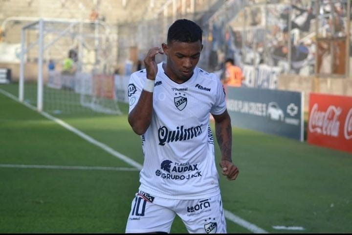

COPA ARGENTINA/ QUILMES 2 - SAN MARTÍN (T) 0
Quilmes venció a San Martín por 2-0 y se metió en 16vos de la Copa Argentina
Con mayoría de suplentes y una previa cargada de polémicas, el Cervecero venció al Ciruja con goles de Machado y Molina. Ahora, espera por Rosario Central o Sol de Mayo.
Quilmes ganó y avanzó en la Copa Argentina. (Prensa Quilmes).
QUILMES
2 vs 0
SAN MARTIN (T)
Camilo Machado 6' PT Mauro Molina 58' ST
Copa Argentina / 32vos de final / 27 de Abril - 21:00h. / Estadio Carlos Augusto Mercado Luna
A veces el fútbol es difícil de entender y la victoria de Quilmes en la tarde-noche del miércoles suma otro capítulo más a este fenómeno. San Martín de Tucumán hizo todo: dominó, presionó, atacó y acorraló contra un arco a un Cervecero que jugó con mayoría de suplentes. Pero claro, hizo todo, menos el gol. Los del Sur aprovecharon sus momentos, fueron efectivos y consiguieron el pase a la próxima fase de la Copa Argentina con un 2-0 final.
Los goles de la Cerveza vinieron tras dos errores de la defensa tucumana: el primero llegó a través de un penal, bien cobrado por el árbitro, luego de que Hernán Lopes tocara la pelota con la mano en el área (en el ST Penel no tomó la misma determinación cuando la bocha le pegó a un jugador cervecero). Camilo Machado lo hizo valer y puso arriba a Quilmes ni bien comenzado el partido. Luego, cuando el Ciruja dominaba, un pelotazo largo al área de San Martín rebotó en la espalda de Nicolás Sansotre y le quedó picando en el punto penal a Mauro Molina: zurdazo y 2-0 final para los de Leandro Benítez. Pero esta victoria no se puede entender sin la presencia de Matías Budiño en el arco. El arquero sacó todo lo que llegó a su área. Figura.

En la previa del encuentro todo indicaba que los de Tucumán se tenían que llevar la victoria: el Cervecero llegaba con una racha de ocho partidos sin ganar, paraba un equipo con mayoría de suplentes y tuvo que pasar por la requisa policial al micro cuando estaba llegando a La Rioja -donde se habrían encontrado sustancias prohibidas-.. Pese a todas las adversidades, los del Chino Benítez vencieron a San Martín, que es animador en la Primera Nacional y puso lo mejor que tenía a disposición.
Ahora, ya con el pasaje a 16avos sellado, esperan por el vencedor la llave de Rosario Central y Sol de Mayo -sin fecha definida- para conocer a su rival.
Resumen del partido
Alineaciones
| Quilmes | ||
|---|---|---|
| 1 | Matías Budiño | Arq |
| 4 | Martín Ortega | Def |
| 13 | Federico Tévez | Def |
| 5 | Rafael Barrios | Def |
| 13 | Matías Cortave | Def |
| 14 | Iván Erquiaga | Med |
| 8 | Kevin López | Med |
| 14 | Richard Núñez | Med |
| 18 | Julián Bonetto |
Del |
| 17 | Mauro Molina |
Del |
| 16 | Camilo Machado |
Del |
| Suplentes | ||
| 16 | Axel Batista |
Sup |
| 9 | Federico González |
Sup |
| 11 | Alexis Quintana |
Sup |
| Director Técnico | ||
| - | Leandro Benítez | DT |
| San Martín (T) | ||
|---|---|---|
| 1 | Darío Sand | Arq |
| 3 | Lucas Diarte | Def |
| 6 | Hernán López | Def |
| 2 | Hernán Pellerano |
Def |
| 4 | Nicolás Sansotre | Def |
| 18 | Milton Céliz |
Med |
| 5 | Rodrigo Herrera | Med |
| 10 | Valentín Larralde |
Med |
| 7 | Federico Jourdan |
Med |
| 11 | Diego Sosa |
Del |
| 9 | Juan Miritello | Del |
| Suplentes | ||
| 16 | Patricio Pérez |
Sup |
| 16 | Tino Costa |
Sup |
| 8 | Mauro Bellone |
Sup |
| 14 | Lucas Cano |
Sup |
| 16 | Juan Martín Imbert |
Sup |
| Director Técnico | ||
| - | Pablo de Muner | DT |
| Cronología | ||
|---|---|---|
| 90+7' | Final del partido. Quilmes 2, San Martín (T) 0. | |
| 78' | Tarjeta amarilla para Federico González (Quilmes). | |
| 74' | Sustitución en San Martín (T). Sale Milton Céliz, ingresa Patricio Pérez. | |
| 74' | Sustitución en San Martín (T). Sale Valentín Larralde, ingresa Mauro Bellone. | |
| 68' | Sustitución en Quilmes. Sale Julián Bonetto, ingresa Federico González. | |
| 67' | Sustitución en Quilmes. Sale Mauro Molina, ingresa Alexis Quintana. | |
| 62' | Sustitución en San Martín (T). Sale Hernán Pellerano, ingresa Lucas Cano. | |
| 58' | Gol de Quilmes. Mauro Molina. Quilmes 1 - 0 San Martín (SJ) | |
| 52' | Sustitución en Quilmes. Sale Camilo Machado, ingresa Axel Batista. | |
| 50' | Tarjeta Amarilla para Hernán Pellerano (San Martín (T)). | |
| 45' | Final primer tiempo. Quilmes 1, San Martín (T) 0. | |
| 45' | Sustitución en San Martín (T). Sale Diego Sosa, ingresa Juan Martín Imbert. | |
| 45' | Sustitución en San Martín (T). Sale Federico Jourdan, ingresa Alberto Costa. | |
| 6' | Gol de Quilmes. Camilo Machado. Gol de penal. Quilmes 1 - 0 San Martín (SJ) | |
| Arrancó el partido. Inicio primer tiempo. |
COMENTARIOS
Comentar las notas de Sportia es exclusivo para usuarios logueados.